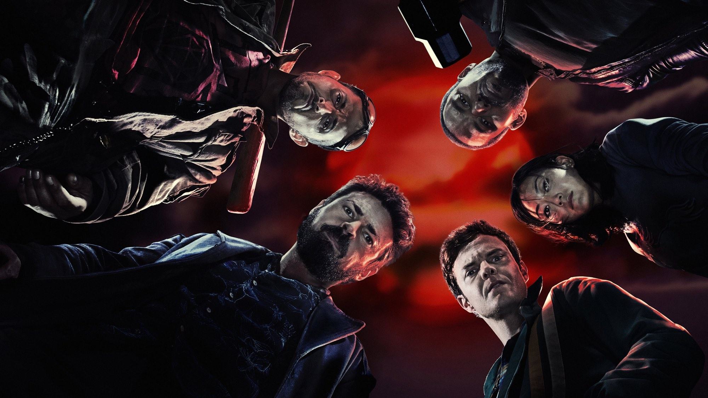

The Boys
In un mondo dove i supereroi sono star da marketing gestite da una multinazionale, un gruppo di uomini comuni decide di fargliela pagare.
The Boys – Stagione 1
Hughie perde la fidanzata per colpa di un supereroe distratto e si unisce a Billy Butcher e ai suoi «Boys» per smascherare i Sette.

The Boys – Stagione 1
Un ragazzo con le dita della fidanzata ancora strette nelle sue e un aereo lasciato precipitare da chi doveva salvarlo
Leggi la recensione →The Boys – Stagione 2
I Boys sono ricercati, e nei Sette arriva Stormfront: una nuova eroina che piace a tutti, e che nasconde idee terribili.

The Boys – Stagione 2
Stormfront, un Homelander che perde il controllo e una stagione che parte piano e dalla terza puntata non si ferma più
Leggi la recensione →The Boys – Stagione 3
Butcher trova un modo per combattere ad armi pari, ma il prezzo è altissimo, mentre torna la leggenda di Soldier Boy.

The Boys – Stagione 3
Con Soldier Boy, Homelander trova qualcuno che gli somiglia fin troppo: è la stagione migliore della serie, ma il finale frena
Leggi la recensione →The Boys – Stagione 4
Patriota è sempre più potente e più amato, e l'America è a un passo dal dargli tutto: i Boys sono divisi proprio quando servirebbero di più.

The Boys – Stagione 4
Homelander non è mai stato così spaventoso e il ritorno al laboratorio vale la stagione, però i Boys girano in tondo fino al finale
Leggi la recensione →The Boys – Stagione 5
La quinta e ultima stagione di The Boys (Prime Video, 8 episodi dall'8 aprile al 20 maggio 2026) chiude la serie di Eric Kripke con Homelander al potere e Butcher pronto a tutto. La critica l'ha promossa (92% su Rotten Tomatoes), il finale ha diviso il pubblico: per noi un addio imperfetto ma coerente.
The Boys – Stagione 5
Homelander al potere, Butcher con un'ultima arma e otto episodi per chiudere tutto: la fine di The Boys è feroce, cupa e sbilanciata
Leggi la recensione →